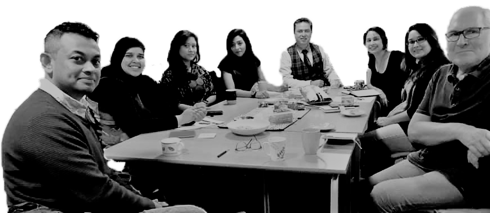

British Bangladeshi Poetry Collective (BBPC) is a non-profit organisation based in London, UK. We
target our work in the communities that need help in the area of social cohesion, working with
local partners to deliver solutions using language and poetry. We hope to create long-term
change in communities where low levels of literacy are entrenched, intergenerational tension is
impacting people’s lives.
Reading and sharing poetry from other cultures, such as Bangladeshi classics to English modern
poetry, we hope to create the much needed connections between people from different backgrounds
and age. Poetry can provide a safe space for connection and exchange, which can lead to mutual
respect and understanding. We work with poets to collaborate and connect with local communities
through performance, workshops and sharing events.
MissionMission


- Use poetry to create a safe space for people and communities to connect, share and have a dialogue with each other. Using poetry performances and workshops of different language and cultures encourage social cohesion and growth
- Celebrate the creativity and the cultural diversity of the multi-cultural communities in the UK using poetry as a tool.
- To showcase the British Bangladeshi poetry scene as well as others marginalised poetry groups to mainstream British audience